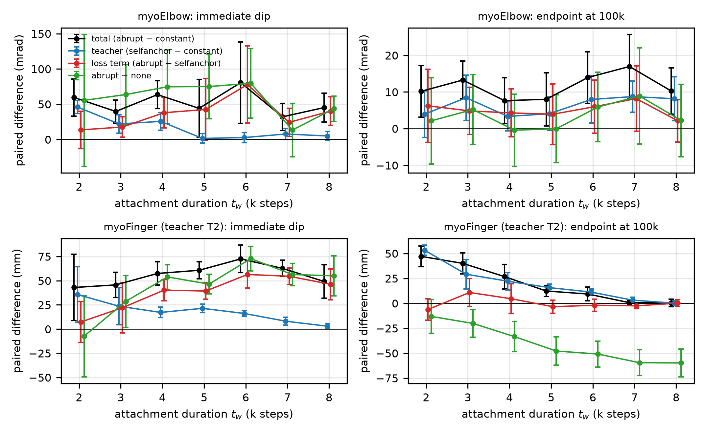
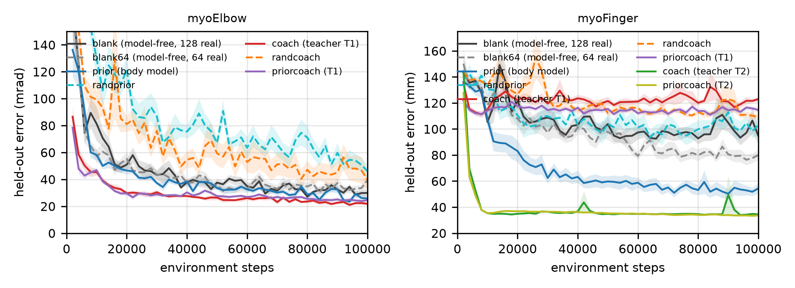
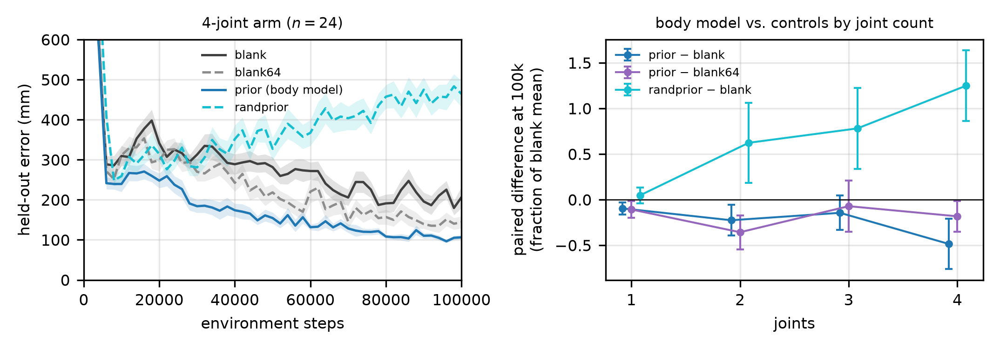

Submitted to IEEE Transactions on Cognitive and Developmental Systems · 2026 · sole author
Take a head start away, and wait until learning has converged: the learner that lost it is never behind one that never had it. What remains is a shortfall, not dependence.
Mu-Hua (Maurice) Wang · National Yang Ming Chiao Tung University
This paper merges and supersedes two earlier drafts (Two Routes to a Motor Prior, which scored every condition at a 12,000-step endpoint, and a separate teacher-withdrawal study). Not posted to any preprint server.
The whole study, no sound needed. Where a body model comes from, what it is worth and why, what a teacher is worth, and what happens when either is taken away. The footage is myoFinger policies at the 100,000-step budget the paper scores; every number on a card is a value of the audited paper.
The guidance hypothesis holds that guidance breeds dependence: the longer a learner is guided, the larger its fall when guidance is withdrawn. We test it, and the same question for a model of the body, in one soft actor-critic learner on six muscle-driven bodies, two from MyoSuite and four planar arms of one to four joints, given a frozen forward model learned from reward-free babbling or a frozen teacher acting through a distillation term, with matched seeds, an adversarial control for each prior and training to a checked plateau. Replacing a withdrawn teacher by a frozen snapshot of the student, which keeps the loss term but adds no information, separates what withdrawal removes: the teacher's share of the immediate drop falls with how long it was attached, the deleted term's does not. Once training has converged, a learner that lost its teacher is never detectably worse than one never guided, at any attachment duration, on either body, whether guidance supplemented or replaced its own gradient; with a competent teacher it is better, by more the longer it was guided. A withdrawn body model can leave the learner short of one that kept it, never behind one that never had it. What remains after withdrawal is a shortfall against keeping the prior, not dependence. What the priors are worth is bound to their content: the babble model beats model-free learning on four of six bodies and a random model on all six, and a teacher is worth its competence.
Withdrawal as the literature performs it changes two things at once. Zeroing a teacher's distillation weight deletes a loss term as well as the teacher's information. The control here is a self-anchor: at withdrawal the teacher is replaced by a frozen copy of the student itself, so the loss term survives with the same weight and form but carries nothing further. The literature's own measure of dependence is the withdrawn learner against one never guided.

The withdrawal cost, taken apart, at seven attachment durations. Top myoElbow (mrad), bottom myoFinger with a competent teacher (mm); left the immediate drop, right the endpoint at 100,000 steps; paired means with 95 % intervals, 12 seeds. Right after withdrawal the teacher's share (blue) falls with attachment, −6.23 [−7.79, −4.68] mrad and −4.65 [−7.05, −2.25] mm per 1,000 attached steps, while the deleted term's share (red) does not; on the finger it is the term that grows. At 100k the withdrawn learner (green) is never behind one never guided: level on the elbow at every duration, and on the finger ahead, by more the longer the teacher was attached (−8.44 [−9.89, −6.99] mm per 1,000 steps).
The same holds when guidance replaces the learner's own gradient (cloning only until withdrawal): at 100k plain SAC after withdrawal is level with a never-guided learner on the elbow and 38–59 mm ahead of it on the finger. The two bodies differ in what the collapse at withdrawal is: on the elbow it is switching on the student's own gradient, and keeping the teacher does not prevent it; on the finger it is the deleted term, and keeping the teacher does.
And for the body model. Withdrawn at 8k with the learner's real-data signal held fixed, it costs the elbow +22.11 [+4.94, +39.28] mrad at 12k, where the standard protocol detects nothing, and is not detected at 100k. On the finger it leaves the learner 15 mm short of one that kept the model and 25 mm ahead of one that never had it.

Held-out reach error over 100,000 training steps, mean of 12 matched seeds, band ±1 SE, lower is better. myoElbow (1 joint, 6 muscles, mrad): the body model's lead over model-free learning is a transient of the first 12k (−4.09 [−11.11, +2.94] at 100k). myoFinger (4 joints, 5 muscles, mm): the body model's lead is stable, −40.29 [−57.95, −22.64]. On the finger the teacher decides everything: held near a teacher that barely moves the student ends +28.33 [+16.11, +40.56] worse than no aid; with a competent teacher it ends at 34.50 mm, ahead of every condition without that teacher.
The body model against nothing. myoFinger at 100k, same held-out target, frame for frame. Left: the frozen babble-learned body model. Right: model-free SAC with the same budget. 54.37 mm against 94.66 over 12 seeds.
Content, not machinery. Left: the babble-trained model. Right: a random-initialised model in the identical Dyna loop. The trained model wins by −48.71 [−62.32, −35.09] at 100k.

Four planar muscle arms of one to four joints (24 seeds on the two hardest). The babble model beats model-free learning on the one-, two- and four-joint arms and a random model on every arm. A random model's harm grows with joint count, +0.41 [+0.18, +0.63] of the model-free error per joint; the trained model's own benefit does not grow detectably. A harder body makes a wrong model cost more, not a right one worth more.
A unit warning. myoElbow error is in milliradians, the finger and the planar arms in millimetres. Nothing on this page compares magnitudes across bodies.
Every non-significant cell is to be read as not detected at this power, never as equal. Held-out targets, paired-t 95 % intervals.
| Result | Estimate (95 % CI) | Holds on |
|---|---|---|
| A withdrawn learner is never behind one never guided, once training has converged Abrupt withdrawal minus never guided, at 100k, over 22 cells: seven attachment durations on each MyoSuite body in the additive regime, four on each in the replacing regime. None is detectably positive. | elbow slope +0.50 [−0.37, +1.37] finger slope −8.44 [−9.89, −6.99] |
both bodies, both regimes |
| Right after withdrawal, the teacher's share falls with attachment Self-anchor minus constant, at the immediate drop. What grows, where anything does, is the deleted term (finger: +7.07 [+2.95, +11.19] per 1,000 steps). | elbow −6.23 [−7.79, −4.68] finger −4.65 [−7.05, −2.25] |
both bodies |
| A withdrawn body model leaves a shortfall, not a deficit Matched withdrawal at 8k. Against keeping the model the finger learner is +15.31 [+5.70, +24.91] mm short; against never having one it is ahead. | finger vs never had −24.99 [−44.86, −5.11] elbow vs never had +0.97 [−6.59, +8.53] |
both bodies |
| The body model's worth is its content Babble-trained model minus a random one in identical machinery, 100k. It beats model-free learning on four of six bodies and is never worse. | elbow −20.29 [−32.00, −8.59] finger −48.71 [−62.32, −35.09] |
all six bodies |
| A teacher is worth its competence myoFinger, same seeds and loss, a near-no-op teacher (169.1 mm) against a competent one (35.6 mm). | competent − near-no-op −88.50 [−93.12, −83.88] | finger |
| Earlier claims withdrawn “The body model helps where the body is hard” (the joint-count series does not support it); “the body decides between the routes” (the teacher does); a 12k endpoint for everything (it sat inside a transient on both MyoSuite bodies). | — | withdrawn claim |
One soft actor-critic backbone in every condition (two hidden layers of 128, batch 128, update-to-data ratio 2), at least 12 matched seeds per condition, and evaluation on twenty held-out targets disjoint from the eight training targets. The body model is a forward model learned once from task-agnostic, reward-free Ornstein–Uhlenbeck babbling, then frozen and used for short-horizon Dyna rollouts. The teacher is attached through a distillation term on the student's actor loss, either adding to the student's own gradient or replacing it until withdrawal.
Each prior has an adversarial control: a random model in the same imagination machinery, a random teacher in the same loss. Withdrawing the body model has a matched-replay condition that holds real data per update fixed; withdrawing the teacher has the self-anchor, a random anchor, and in the cloning-only regime a condition that switches on the student's gradient while keeping the teacher. Every condition runs to 100,000 steps and is checked for a plateau.
Six bodies, about 1,500 single-thread CPU-hours. Every condition has at least twelve matched seeds; the three- and four-joint arms have twenty-four.
The babble data is task-agnostic and reward-free, recorded before any task exists.
Every table cell, every significance mark, every interval quoted in the prose and every worded claim, rebuilt from the raw per-seed files by one audit script. Zero mismatches.
Every run of the earlier 12k study with a counterpart here is reproduced at the checkpoints they share, with no difference. Runs are deterministic on CPU.